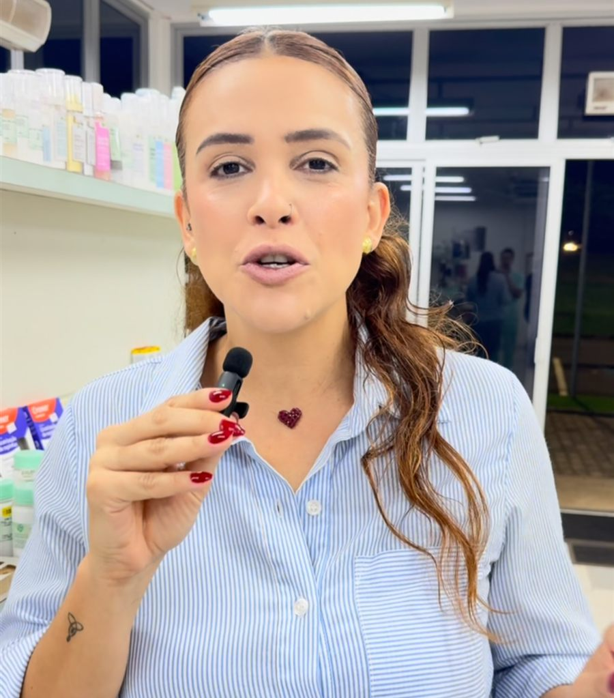
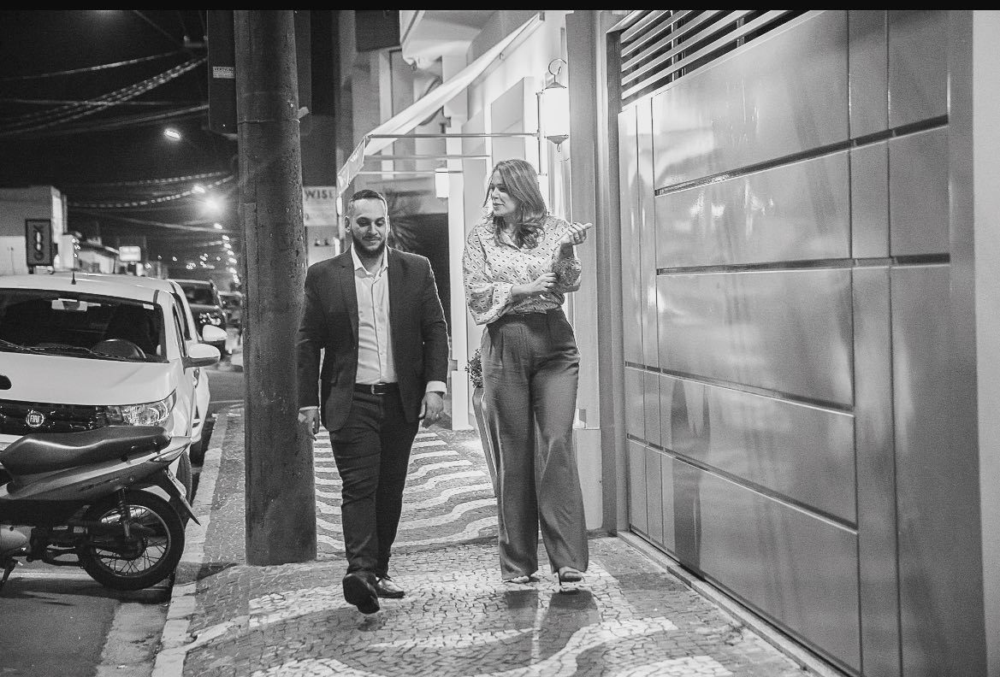
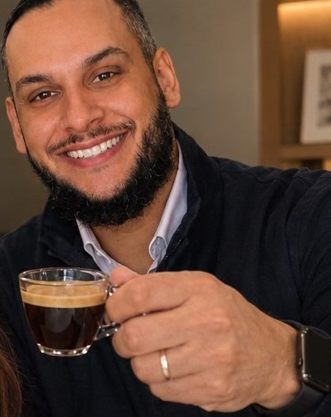

Dra. Fernanda Flores
Farmacêutica, doutora pela UNESP e professora universitária
FF Estética Avançada, Araras/SP
Avaliação na clínica
Agende sua avaliação
Direto no WhatsApp
Site oficial
Conheça a clínica
Tratamentos, dúvidas e o jeito de trabalhar da Dra.
Para profissionais
Mentorias FF
Turmas de até 4 alunos, com prática supervisionada.

Curso online
Peelings Químicos
Tipos, formulações e indicações.
Dra. Fernanda Flores
Instagram
Siga a clínica
@ff_esteticaavancada
Dicas, bastidores e resultados.
Centro de Araras
Como chegar
Rua Visconde do Rio Branco, 340
Abrir no mapa
Sócio da FF
Fale com o Dr. Fernando
(19) 99177-9732